places
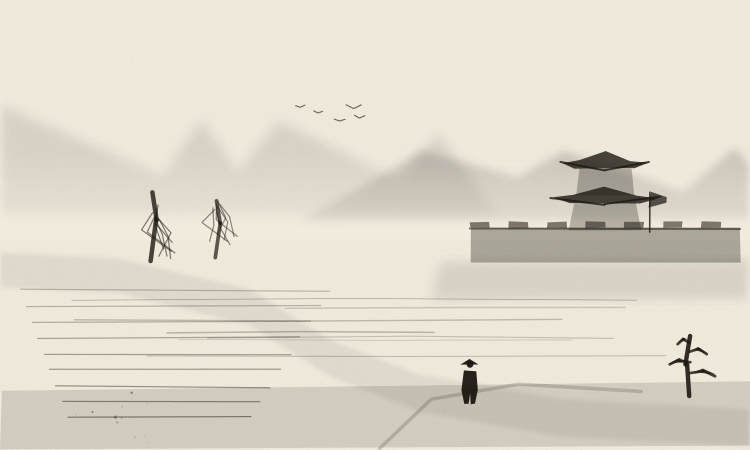
潁川汝南
yingru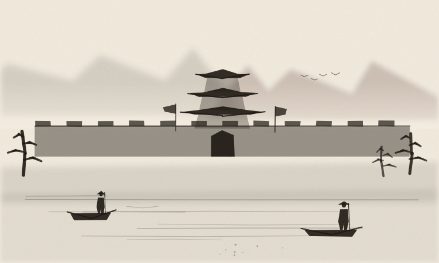
南陽
nanyang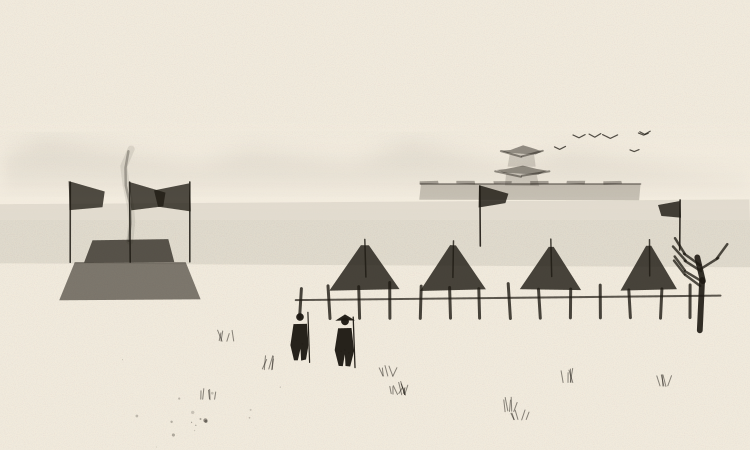
冀州
jizhou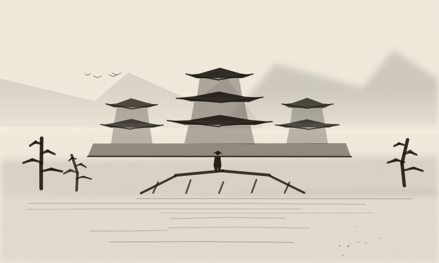
洛陽
luoyang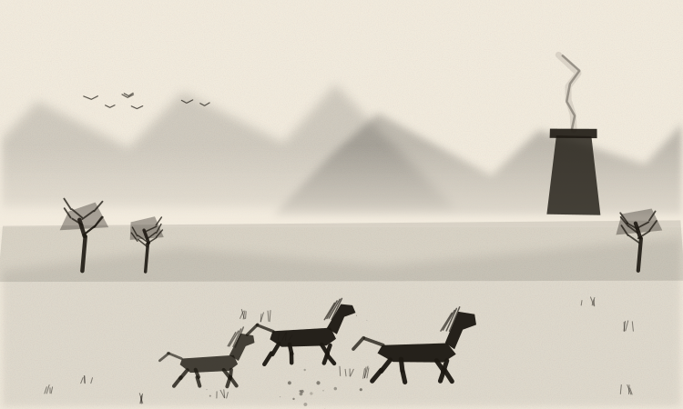
幽州
youzhou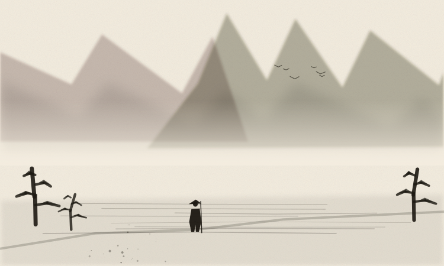
天下
tianxiaevents
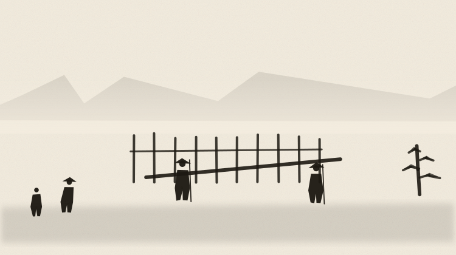
哨卡盤查
checkpoint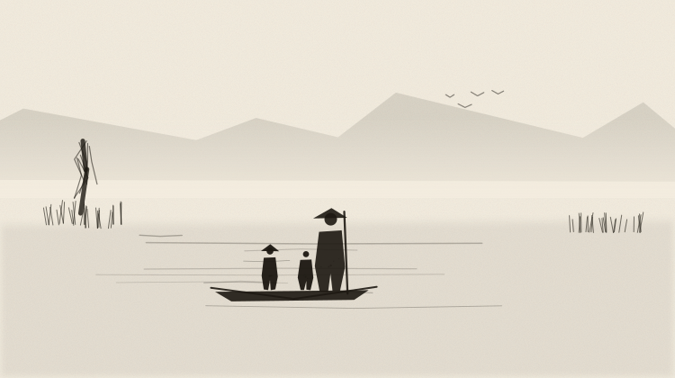
渡口船家
ferry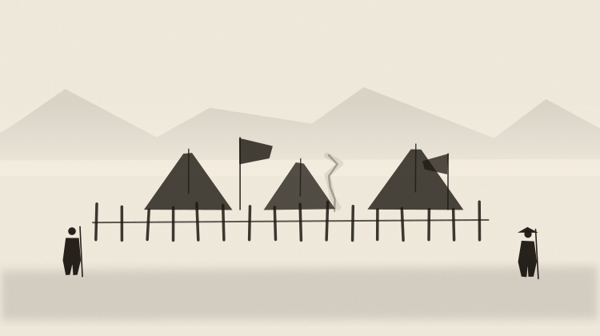
營寨
camp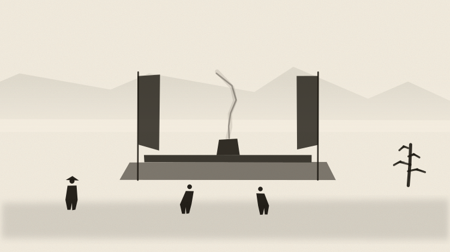
符水道壇
talisman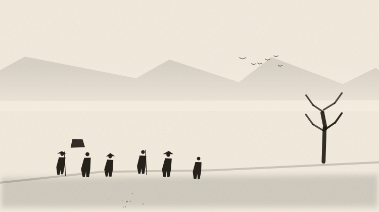
流民逃卒
refugees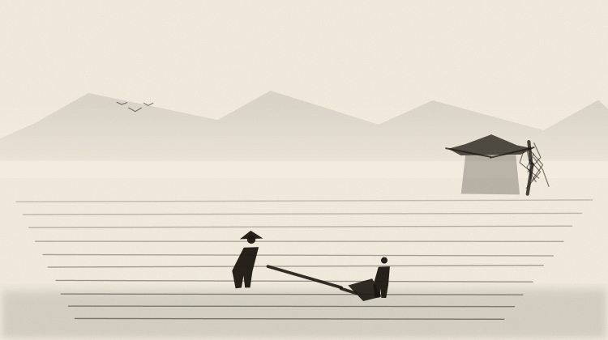
田畝
farm市集
market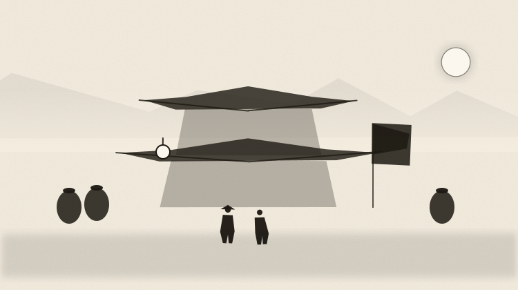
酒肆
tavern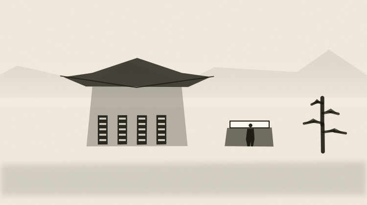
書院藏書
academy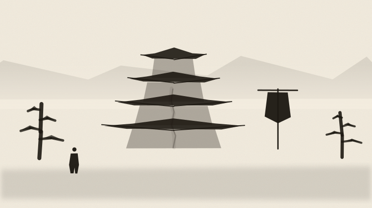
寺院
temple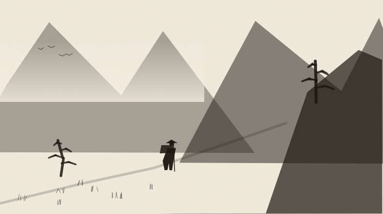
山道採藥
mountain_path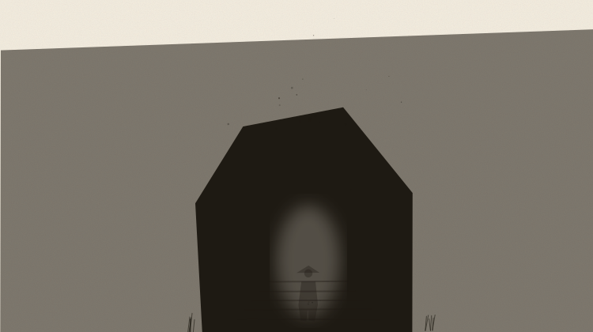
洞窟地窖
cave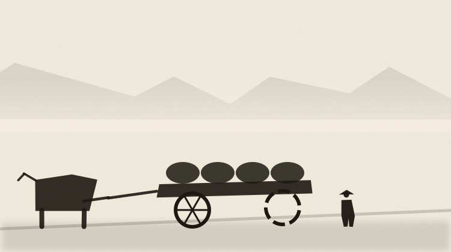
糧車牛車
cart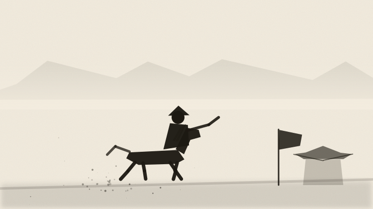
驛馬急報
courier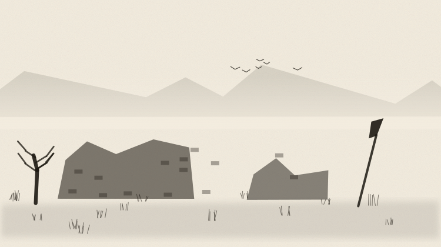
舊壘遺跡
ruins城門
gate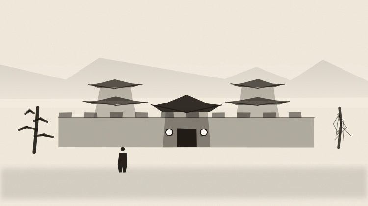
莊院塢堡
manor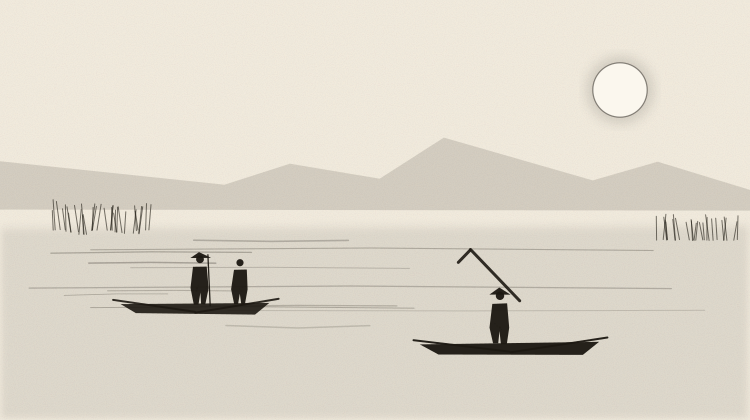
水寇夜泊
pirates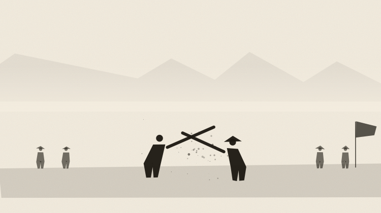
比武角力
sparring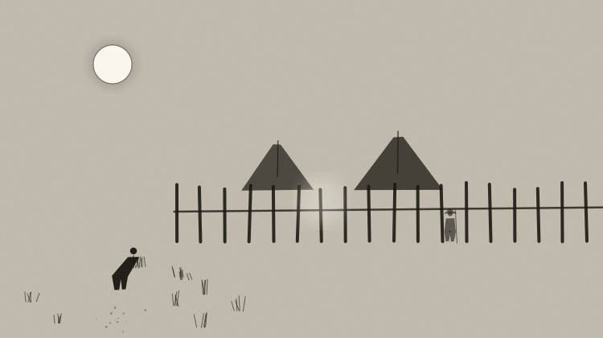
夜探潛行
stealthfigures
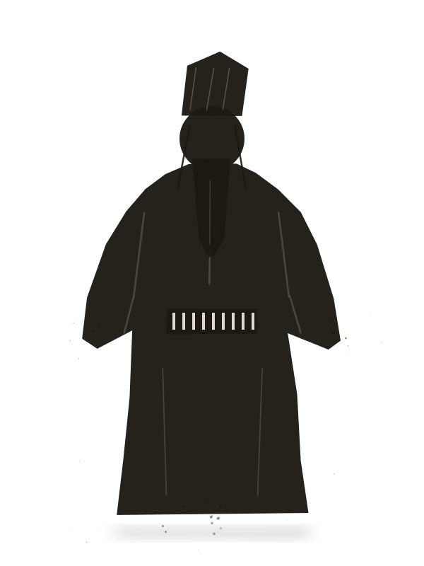
盧植
luzhi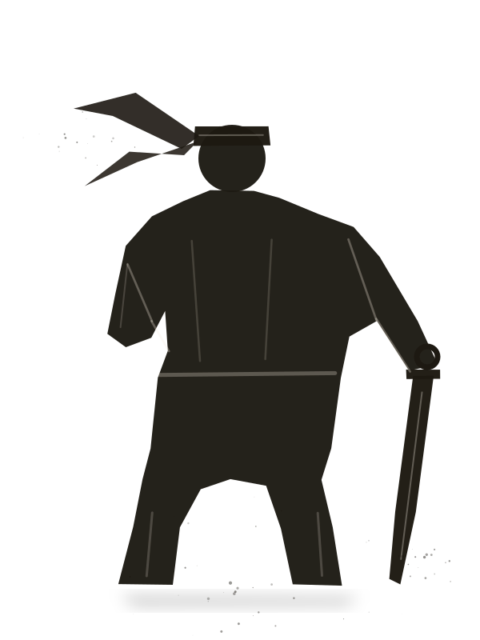
波才
bocai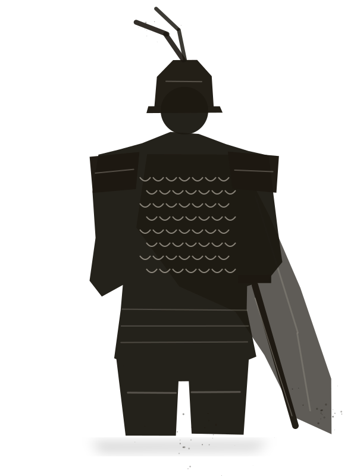
皇甫嵩
huangfusongicons
臂力
str身法
agi根骨
con悟性
wis博聞
lore對手
foe離開
leave說話
speak銀兩
silver心得
xinde名望
fame善
good惡
evil兵器
weapon防具
armor坐騎
mount寶物
treasure丹藥
pill素材
material書信
letter軍令
order懸賞
bounty託付
errand探索
explore出陣
sortie交友
friends移動
move此地
here剛
gang柔
rou